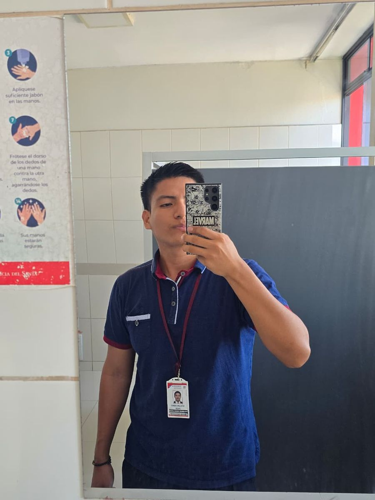
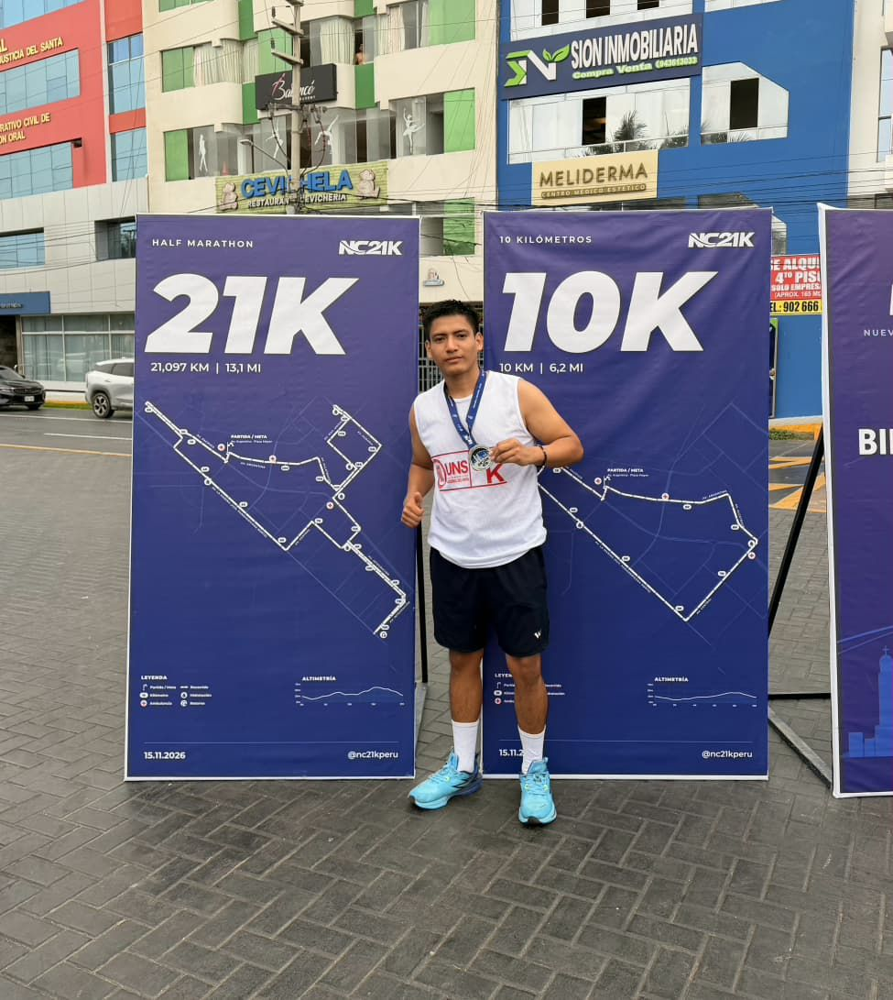

06 · Galería
Fotos de este año.
Desliza la foto de arriba o tócala para pasar a la siguiente.




Desliza o toca la foto
Foto 1 de 5
Laguna Humantay
Cusco · septiembre de 2026
06 · Galería
Desliza la foto de arriba o tócala para pasar a la siguiente.


Desliza o toca la foto
Foto 1 de 5
Cusco · septiembre de 2026